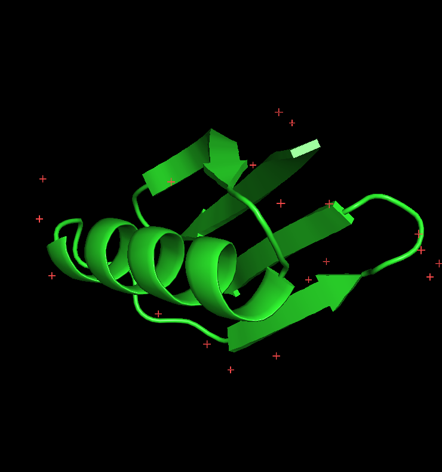
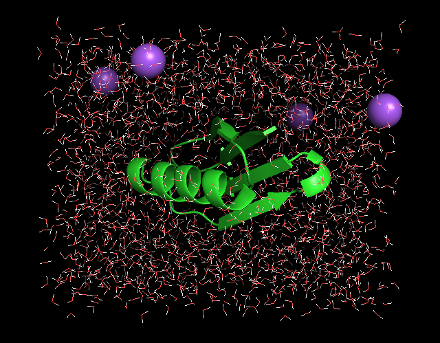

Proteins are nature's universal machines. For example, they are used as building blocks (e.g. collagen in skin, bones and teeth), transporters (e.g. hemoglobin as oxygen transporter in the blood), as reaction catalysts (enzymes like lysozyme that catalyse the breakdown of sugars), and as nano-machines (like myosin that is at the basis of muscle contraction). The protein's structure or molecular architecture is sufficient for some of these functions (like for example in the case of collagen), but for most others the function is intimately linked to internal dynamics. In these
cases, evolution has optimised and fine-tuned the protein to exhibit exactly that type of dynamics that is essential for its function. Therefore, if we want
to understand protein function, we often first need to understand its
dynamics (see references below).
MD simulations have nowadays become essential tools for the study of biomolecular systems. Over the last decade, it has been successfully elucidated key biological processes such as enzyme catalysis, ribosomal translocation, DNA repair, membrane permeation, protein folding, macromolecular crowding and viral assembly, among many others. The use of this technique enables monitoring the dynamics of biomolecules in an unprecedentedly broad spatio-temporal range, from pico- to milli-seconds and from thousands to hundreds of millions of atoms. Moreover, recent advances in computing power, together with optimized algorithms and new sampling methodologies, are pushing these boundaries further, while increasing the precision and accuracy. Simulations do not only help interpret experimental data but also complement experimental techniques such as Cryo-EM, FRET, SAXS, or NMR to reveal key structure, dynamic, and energetic information of biomolecules.
Today, we will simulate the dynamics of a small, typical protein domain: the B1 domain of protein G. B1 is one of the domains
of protein G, a member of an important class of proteins, which form IgG binding receptors on the surface of certain Staphylococcal and
Streptococcal strains. These proteins allow the pathogenic bacterium to evade the host immune response by coating the invading bacteria
with host antibodies, thereby contributing significantly to the pathogenicity
of these bacteria.
The simulations will be carried out with the GROMACS simulation package. On the GROMACS homepage you can find both the software and documentation (online reference and paper manual). To run a simulation, three input files are usually required:
We will now follow a standard protocol to run a typical MD simulation of a
protein in a box of water in GROMACS. The individual steps are summarized in a flowchart on the right site.
A. Preparation
Before a simulation can be started, an initial structure of the protein is required. Fortunately, the structure of the B1 domain of
protein G has been solved experimentally, both by x-ray crystallography and NMR. Experimentally solved protein structures are
collected and distributed by the Protein Data Bank (PDB). Please open
this link in a new browser
window and enter "protein G B1" in the search field. Several entries
in the PDB should match this query. We will choose the x-ray structure
with the highest resolution (entry 1PGB) for this study. To download
the structure, click on the link "1PGB", and then, under "Download Files",
select "PDB File". When prompted, select "Save File", and save the file
to the local hard disk.
Open a unix terminal and go to the directory where the pdb file was saved, i.e. Downloads:
cd ~/Downloads
To have a look at the contents of the downloaded PDB file, type:
more 1pgb.pdb
The file starts with general information about the protein, about the structure, and about the experimental techniques used to determine the structure, as well as literature references where the structure is described in detail. (in "more", press the spacebar to scroll). The data file contains the atomic coordinates of our protein structure with one line per atom. (quit the "more" program by pressing "q"). Now we can have a look at the structure:
pymol 1pgb.pdb

We now see a so-called cartoon representation of the protein structure
: atoms (with different colors
for the different chemical elements: green for carbon; red for oxygen
and blue for nitrogen) are not shown directly, but the
bonds between atoms are shown as lines.
Under the "Show" and "Hide" menus ("S" and "H" at the top-right of the "PyMOL Viewer" window), also try
other representations such as "wire", "sticks", "spheres", and "surface". Try different views by moving the mouse over the molecule viewer with the left mouse button pressed, and zoom with the right mouse button pressed. Exit pymol.
Question: Why do we start our MD simulations from the experimental determined 3D structure? Isn't it enough to know the proteins amino acid sequence?
Go back to Contents
B. Setup
We will now prepare the protein structure to be simulated in GROMACS. Although we now have a starting structure for our protein, one might
have noticed that hydrogen atoms (which would appear white) are still missing from the
structure. This is because hydrogen atoms contain too few electrons to
be observed by x-ray crystallography at moderate resolutions. Also,
GROMACS requires a molecular description (or topology) of the
molecules to be simulated before we can start, containing information
on e.g. which atoms are covalently bonded and other physical information. Both the generation of
hydrogen atoms and writing of the topology can be done with the
GROMACS program pdb2gmx:
gmx pdb2gmx -f 1pgb.pdb -o conf.pdb
when prompted for the force-field and water model to be used, choose the number corresponding to the OPLS-AA/L all-atom force field and to the SPC water model.
View the result with:
pymol conf.pdb
In pyMol, change to "wire" representation to see the added hydrogens (white lines).
The topology file written by pdb2gmx is called "topol.top". Have a
look at the contents of the file using:
more topol.top
you will see a list of all the atoms (with masses, charges), followed
by bonds (covalent bonds connecting the atoms), angles, dihedral
angles etc. Near the very end of the topology (in the "[molecules]"
section) there is a summary of the simulation system, including the
protein and 24 crystallographic water molecules.
The topology file thus contains all the physical information about all interactions between the atoms of the protein (bonds, angles, torsion angles, Lennard-Jones interactions and electrostatic interactions).
The next step in setting up the simulation system is to solvate the
protein in a water box, to mimick a physiological environment. For that, we first need to define a
simulation box. In this case we will generate a rectangular box with
the box-edges at least 7 Angstroms apart from the protein surface:
gmx editconf -f conf.pdb -o box.pdb -d 0.7
(note that GROMACS uses units of nanometers). View the result
with
pymol box.pdb
and, in pymol, type:
show cell
Now we fill the simulation box with SPC water using:
gmx solvate -cp box.pdb -cs spc216 -o water.pdb -p topol.top
Again, view the output (water.pdb) with pymol. Now the simulation system is almost ready.
Before we can start the dynamics, we must perform an energy minimisation, to alleviate any bad contacts (atoms overlapping such that a significant repulsion would result, causing numerical problems in the simulation) that might be present in the system. For this we need a parameter file, specifying which type of minimisation should be carried out, the number of steps, etc. For your convenience this file, called "em.mdp", has already been prepared and can be downloaded here. View the file with "more" to see its contents.
more em.mdp
We use the GROMACS preprocessor to prepare our energy minimisation:
gmx grompp -f em.mdp -c water.pdb -p topol.top -o em.tpr -maxwarn 2
This collects all the information from em.mdp, the coordinates from water.pdb and the topology from topol.top, checks if the contents are consistent and writes a unified output file: em.tpr, which will be used to carry out the minimisation:
gmx mdrun -v -s em.tpr -c em.pdb
The output shows that already the initial energy was rather low, so in this case there were hardly any bad contacts. Having a look at "em.pdb" shows that the structure hardly changed during minimisation.
The careful user may have noticed that grompp gave a warning NOTE:
System has non-zero total charge: -4.
Before we continue with the dynamics, we should neutralise this net charge of the simulation system. This is to prevent artefacts that would arise as a side effect caused by the periodic boundary conditions used in the simulation. A net charge would result in an electrostatic repulsion between neighbouring periodic images. Therefore, 4 sodium ions will be added to the system:
gmx genion -s em.tpr -o ions.pdb -np 4 -pname NA
Select the number corresponding to the water group (SOL) from which 4 water molecules will be replaced by sodium ions.

The output (ions.pdb) can be checked with pymol. To better see the ions, type (in pymol):
show spheres, resn NA
If pymol does not display the ions, we can try vmd:
vmd ions.pdb
and in the "VMD Main" window
click on "Graphics"->"Representations" in the menu "Graphical Representations", click on "Create Rep" in the second created representation, change drawing method: from "lines" to "VDW" Selected Atoms: from "all" to "resname NA" click on "Apply"
Since we now changed the topology of the system (4 water molecules were replaced by sodium ions), we have to manually adapt the topology. Open the topology with your favourite text editor (vi, emacs or gedit)
gedit topol.top
browse towards the end of the file, and change the number of SOL (water) molecules (from 24 to 20). Then, add a line with "NA 4" at the end of the file (note the space between "NA" and "4") and do a "save" (twice!) followed by "quit".
Go back to Contents
C. Simulation
Just to be on the safe side, we repeat the energy minimisation, now with the ions included
(remember to (re)run grompp to create a new run input file whenever
changes to the topology, or coordinates have been made):
gmx grompp -f em.mdp -c ions.pdb -p topol.top -o em.tpr -maxwarn 2
gmx mdrun -v -s em.tpr -c em.pdb
Now we have all that is required to start the dynamics. Again, a
simulation parameter file has been prepared for the simulation, and can be
downloaded here. Please browse
through the file "md.mdp" (using "more") to get an idea of the
simulation parameters. The GROMACS online manual describes all
parameters in detail Please don't worry in this stage about all individual parameters, we've chosen common values typical for protein simulations.
Again, we use the GROMACS preprocessor to prepare the simulation:
gmx grompp -f md.mdp -c em.pdb -p topol.top -o md.tpr -maxwarn 2
and start the simulation!
gmx mdrun -v -s md.tpr -c md.pdb -nice 0
The simulation is running now, and depending on the speed and load of
the computer, the simulation will run for a number of minutes.
Question: How do the parts of energy minimization and MD simulation differ (with reference to energy landscapes)?
Go back to Contents
D. Analysis of a GROMACS simulation
The simulation is running now (or finished) and we can start analysing
the results. Let us first see which kind of files have been written by
the simulation (mdrun):
ls -lrt
We see the following files:
pymol md.pdb
then, we load the trajectory by typing on the pymol prompt:
load traj_comp.xtc, md
Play the animation by pressing the play button. We can see that the protein and its surroundings undergo thermal fluctuations, but overall, the protein structure is rather stable, as would be expected on such timescales. To change the view orientation, move the mouse over the molecule, with either the left or right mouse buttons pressed. If you wish to visualize only the protein (in cartoon representation), on the pymol prompt, type:
hide all dss show cartoon
Play the animation by pressing the play button. Close pymol
1. RMSD
For a more quantitative analysis
on the protein fluctuations, we can view how fast and how far the
protein deviates from the starting (experimental) structure:
gmx rms -s md.tpr -f traj_comp.xtc
When prompted for groups to be analysed, type "1 1". gmx rms has
written a file called "rmsd.xvg", which can be viewed with:
xmgrace rmsd.xvg
We see the Root Mean Square Deviation (rmsd) from the starting structure, averaged over all protein atoms, as a function of time.
Question: Why is there an intial rise in the rmsd?
2. RMSF
If we now wish to see if the fluctuations are equally distributed over the
protein, or if some residues are more flexible than others, we can
type:
gmx rmsf -s md.tpr -f traj_comp.xtc -oq -res
Select group "4" (Backbone). The result can be viewed with:
xmgrace rmsf.xvg
We can see that mainly four regions in the protein show a large
flexibility: around residues 1, 11, 21 and 38. To see where these
residues are located in the protein, type:
pymol bfac.pdb
On the pymol prompt type:
hide all show spheres spectrum b
The protein backbone is now
shown with the flexibility encoded in the colour. The red (orange,
green) regions are relatively flexible and the blue regions are
relatively rigid. It can be seen that the alpha-helix and beta-sheet
are relatively stable, whereas the loops are more flexible.
3. POTENTIAL ENERGY
The simulation not only yields information on the structural
properties of the simulation, but also on the energetics. The energies written by mdrun can be analysed:
gmx energy -f ener.edr
Select "Potential" and end your selection by pressing enter twice, View the result with:
xmgrace energy.xvg
As can be seen, the total potential energy initially rises rapidly after
which it relaxes again.
Question: Can you think of an explanation for
this behaviour?
Please repeat the energy analysis for a number of different energy
terms to obtain an impression of their behaviour.
Question: Do you think the length of our simulation is sufficient to provide a faithful picture of the protein's conformations at equillibrium.
4. RADIUS OF GYRATION
The next thing to analyse is the change in the overall size (or gyration radius) of the protein:
gmx gyrate -s md.tpr -f traj_comp.xtc
(again, select group "1" for the protein)
xmgrace gyrate.xvg
Question: What can you say about the size of the protein based on the time-trace of the radius of gyration (e.g. fluctuations and drift)?
5. SOLVENT ACCESSIBLE SURFACE AREA (SASA)
Another important check concerns the behaviour of the protein surface:
gmx sasa -s md.tpr -f traj_comp.xtc -surface 'Protein' -output 'Protein'
Now view the total solvent accessible surface area with:
xmgrace -nxy area.xvg
Let us now split the area into hydrophobic and hydrophilic contributions:
gmx sasa -s md.tpr -f traj_comp.xtc -surface 'Protein' -output '"Hydrophobic" group "Protein" and charge {-0.2 to 0.2}; "Hydrophilic" group "Protein" and not charge {-0.2 to 0.2}; "Total" group "Protein"'
and visualize again the output with xmgrace.
Question: Is the total (solvent-accessible) surface constant? Are any hydrophobic groups exposed during the simulation? (tipp: check in pymol the type of residues exposed to the solvent)
Go back to Contents
Optional exercises
To check if your assumption is correct, repeat the simulation of protein G,
this time without solvent (to observe the effect more clearly, increase the
length of the simulation by changing "nsteps" in the file "md.mdp" by e.g. a
factor of ten).
Question: What are the main differences to the
protein's structure and dynamics as compared to the solvent simulation?
(Hint: use programs like gmx rms and gmx gyrate to analyse both simulations).
gmx pdb2gmx -f 1pgb.pdb -o conf_gromos.pdb
when prompted for the force-field to be used, now choose the GROMOS 43a1 instead of OPLS-AA/L. Use the more and pymol
commands as before to compare the result with the previous configuration
- what difference do you find?
Go back to Contents
Further references:
Principles of protein structure and basic in biophysics and biochemistry:
Computer simulations and molecular dynamics:
Advanced reading:
Go back to Contents